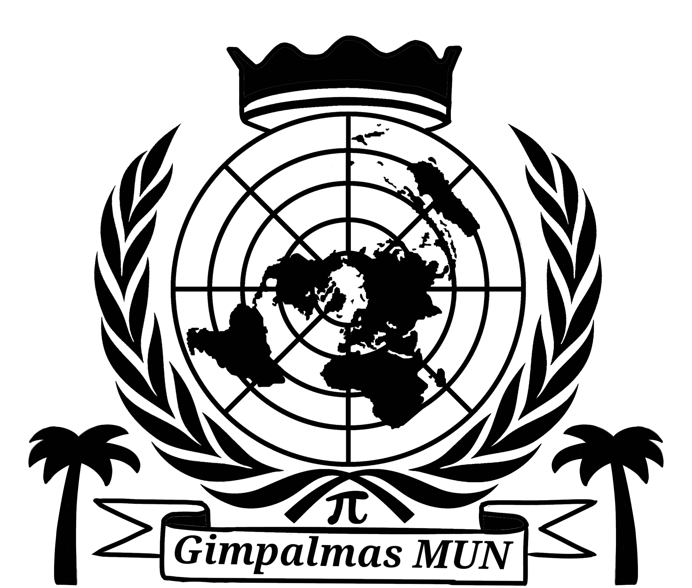
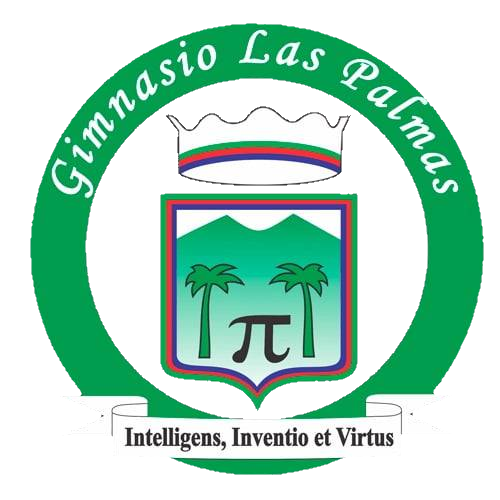

<html lang="en"></html>
<head>
    <meta charset="UTF-8">
    <meta name="viewport" content="width=device-width, initial-scale=1.0">

    <title>MUN-comisiones</title>

    <link rel="stylesheet" href="secundarias.css">
</head>
<body>
    <div class="topbar">
        <li></li>
        <li><p class="tlt">Comisiones|</p></li>
        <li><p class="tlt">GimpalmasMUN</p></li>
        <li></li>
    </div>
    
    <br><br>

    <div class="descripcion">
        <p class="txt1">
            En el modelo de gimpalmasMUN se trabajaron multiples puntos de vista, problematicas, e ideas a desarrollar similares a la ONU, esto con el fin de hacer la simulacion lo más afina posible al modelo real. Por ende, en los distintos debates y especialemente en el debade dado en la asamblea general se discutieron temas acordes a los propuestos por la ONU, es decir, a las comisiones, Por lo que se tuvo en cuenta a las comisiones que presentaran dialogo o relevancia sobre el tema general de la IA, Siendo estas la OIT, UNESCO, OMS, PNUMA y el consejo de seguridad, las cuales a continuación serán explicadas.
        </p>
    </div>
       
    <br><br>

    <div class="cursos">
        <li><p class="grado">OIT</p></li><!--GRADO-->

        <li><p class="txt1">Fundada en 1919 y afiliada a la ONU, la OIT es una agencia que establece normas internacionales del trabajo y promueve derechos fundamentales, como la libertad de asociación, la eliminación del trabajo infantil y la no discriminación laboral. También asesora a gobiernos y empleadores para crear condiciones laborales dignas y aumentar el empleo, en un marco de justicia social.</p></li>
         <br>
    </div>

    <br><br><br><br><br><br><br>

    <div class="cursos">
        <li><p class="grado">UNESCO</p></li><!--GRADO-->

        <li><p class="txt1">Es una agencia especializada de la ONU fundada en 1945, cuyo propósito es promover la paz y la seguridad a través de la cooperación internacional en educación, ciencia, cultura y comunicación. La UNESCO trabaja para proteger el patrimonio cultural y natural, fomentar el acceso universal a la educación y apoyar la libertad de expresión y la igualdad de género.</p></li>
         <br>
    </div>
    
    <br><br><br><br><br><br><br>

    <div class="cursos">
        <li><p class="grado">PNUMA</p></li><!--GRADO-->

        <li><p class="txt1">Establecido en 1972, el PNUMA lidera y coordina los esfuerzos de las Naciones Unidas en materia ambiental. Trabaja en la protección de la biodiversidad, la mitigación del cambio climático, el manejo de recursos naturales y la reducción de la contaminación. También asesora a los gobiernos en la creación de políticas ambientales sostenibles y realiza estudios sobre el impacto ambiental global.</p></li>
         <br>
    </div>
    
    <br><br><br><br><br><br><br>

    <div class="cursos">
        <li><p class="grado">Consejo de seguridad</p></li><!--GRADO-->

        <li><p class="txt1">Es uno de los principales órganos de la ONU y tiene la responsabilidad de mantener la paz y seguridad internacional. Compuesto por 15 miembros, incluidos cinco permanentes con derecho a veto (EE.UU., Rusia, China, Francia y Reino Unido), el Consejo puede imponer sanciones y autorizar operaciones de paz o intervenciones militares. Su rol incluye resolver conflictos mediante la negociación y el diálogo.</p></li>
        <br>
    </div>
    
    <br><br><br><br><br><br><br>

    <div class="cursos">
        <li><p class="grado">OMS</p></li><!--GRADO-->

        <li><p class="txt1">Fundada en 1948, la OMS es el organismo de las Naciones Unidas que pone en contacto a naciones, asociados y personas a fin de promover la salud, preservar la seguridad mundial y servir a las poblaciones vulnerables, de modo que todo el mundo, allá donde esté, pueda alcanzar el más alto nivel posible de salud.La OMS lidera los esfuerzos mundiales para ampliar la cobertura sanitaria universal. Dirigimos y coordinamos la respuesta mundial a las emergencias sanitarias.</li>
        <br>
    </div>
 
    <br><br><br><br>

    <div class="footer">
        <div>
            <li class="sub">Julian Rosas</li>
            <li class="sub">Kevin Segura</li>
        </div>
        <div class="extra">
            <li><a class="sub" href="Minijuegos/J_Comisiones/index.html">Minijuego</a></li>
            <li><a class="sub" href="Posters/P_Comisiones.png">Poster</a></li>
            <br>
        </div>
    </div>
</body>
</html>